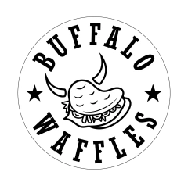
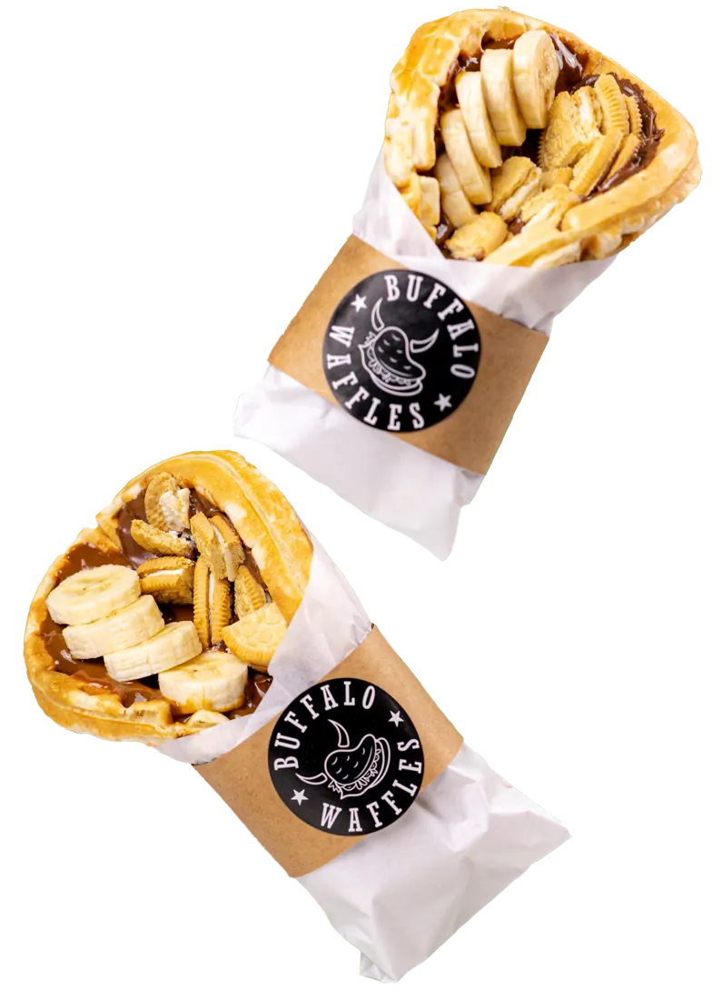
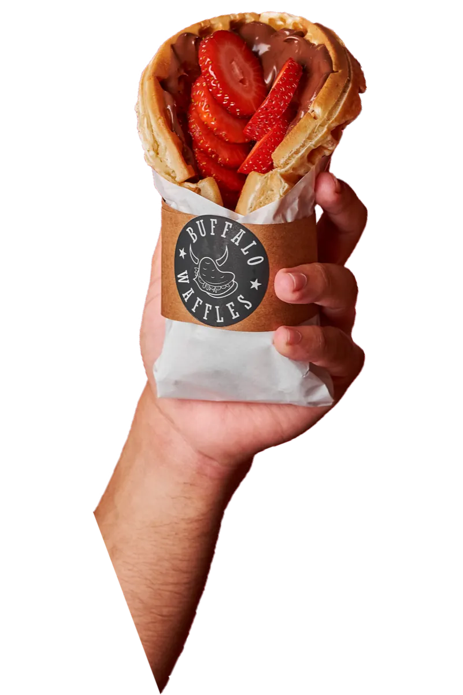
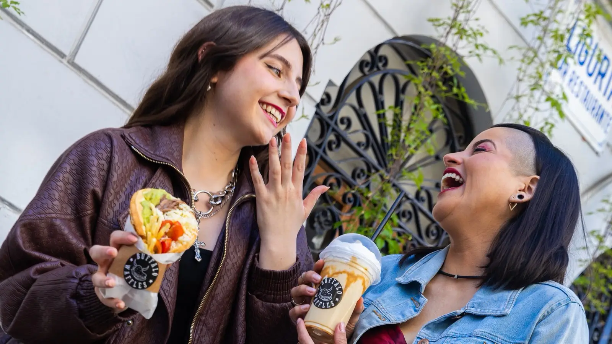
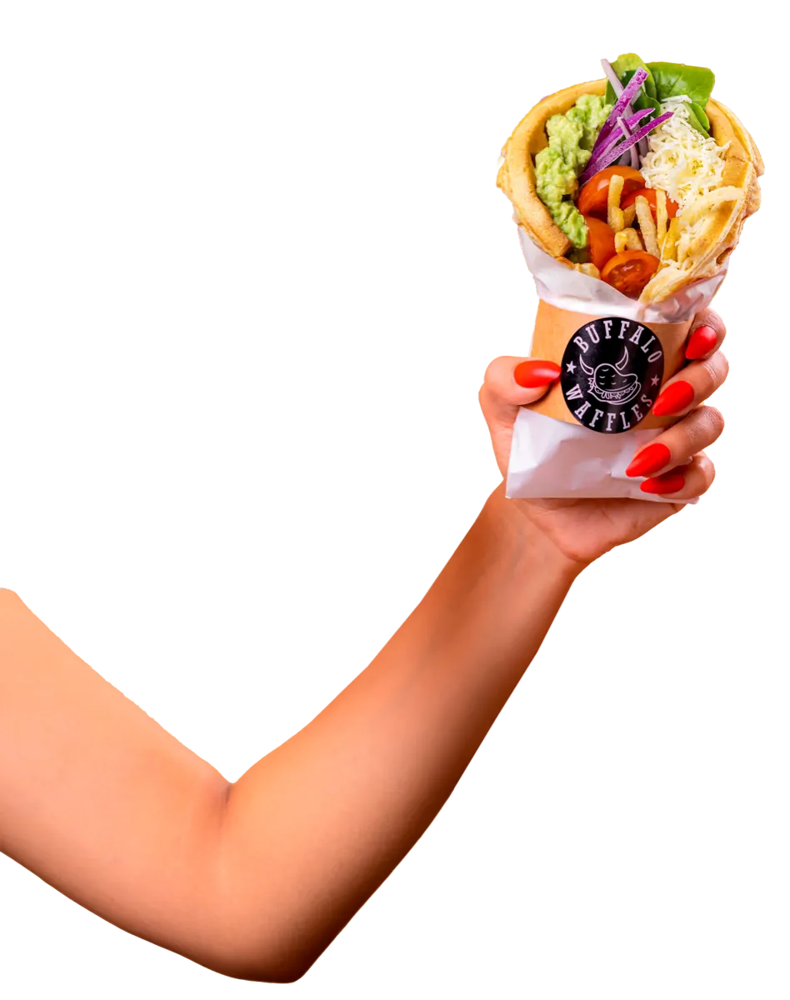

100 % chilena
Una marca con identidad propia, nacida y crecida en Chile, que desafió las reglas de la comida rápida.
FAQ 16 · blog
Buffalo Waffles busca franquiciados para seguir creciendo de Arica a Punta Arenas. Esta es la carta: siete capítulos con lo que trae la marca, lo que cuesta y cómo se abre; al final, una conversación corta y tu reunión inicial.

«Eso no se importa: se construye con el tiempo y con trabajo», dice el blog de la marca. Esto es lo que trae tu franquicia desde el primer día. Desliza la pista o usa las flechas.
Una marca con identidad propia, nacida y crecida en Chile, que desafió las reglas de la comida rápida.
FAQ 16 · blog
11
De Arica a Punta Arenas, según el mapa publicado.3
Sitio · mapaSe vende en el local y en plataformas de delivery: dos canales y distintos momentos de consumo.
FAQ 112 + 2
Dos full time de lunes a viernes y dos part time el fin de semana, en términos generales.
Blog · FAQ 10+50·55
El sitio dice +50; el blog, más de 55.4 Cifra única con fecha de corte [a confirmar]
Por confirmarWaffles dulces y salados para llevar: un formato que se reconoce al tiro.
Producto real
Las cifras de inversión que entregó Buffalo Waffles, escritas como se escribe una carta: sin letra chica y con lo pendiente a la vista.
Montos en pesos chilenos. Cifras entregadas por Buffalo Waffles, octubre 2026.1
Resultado modelado en base a un escenario promedio de un local tipo Módulo.5
Resultados individuales pueden variar según ubicación, formato y gestión.
Todavía no hay desglose por formato ni capital propio mínimo: los vemos contigo en la evaluación.

Siete comandas, en orden. Abres 3 a 6 meses desde la firma, según el local y la habilitación.
Paso 1 de 7 1
Haces tu pedido (la postulación) aquí mismo, en una conversación corta.
Antes de firmar · duración [a confirmar]Paso 2 de 7 2
Te presentamos la franquicia y resolvemos tus dudas con datos de tu zona.
Antes de firmar · [a confirmar]Paso 3 de 7 3
Revisamos tu perfil y tu capacidad de inversión.
Antes de firmar · [a confirmar]Paso 4 de 7 4
Búsqueda, evaluación y aprobación de la ubicación, con el equipo a tu lado.
Antes de firmar · [a confirmar]Paso 5 de 7 5
Firma de contratos: 5 años, renovable por 4 periodos. Desde aquí corre el plazo de apertura.
Día 0Paso 6 de 7 6
Tu equipo aprende el sistema mientras se habilita el local. Días u horas de capacitación [a confirmar]
Dentro de los 3 a 6 mesesPaso 7 de 7 7
Abres tu Buffalo Waffles, con apoyo en la apertura.
3 a 6 meses desde la firmadesde la firma hasta la apertura. En Estados Unidos, el benchmark muestra referentes con 9 a 12 meses.6
«No estás solo en ningún punto de este proceso», escribe la marca en su blog. Así se reparte el acompañamiento antes, durante y después de abrir.
Dos franquiciados publicados, con sus palabras. Las próximas voces vendrán en video, con su local y sus años en la red.
Color exploratorio: Persian Plum #661A2B · por confirmar con el clienteSer parte de la red de franquicias de Buffalo Waffles ha significado trabajar junto a una marca que entrega confianza, cercanía y un verdadero acompañamiento en cada etapa. Más que una franquicia, hemos encontrado un espacio donde nuestros objetivos pueden crecer con respaldo, apoyo humano y una visión compartida de éxito.
Gracias a nuestra pasión, la dedicación de todo nuestro equipo y una marca excepcional como Buffalo Waffles hemos conseguido instalar un negocio exitoso que ha conectado con las personas de Iquique y esperamos dejar huellas en la región de Tarapacá.
[Placeholder] «Mi primer año», franquiciado/a por grabar
[Placeholder] Operar con administrador
[Placeholder] Abrir en regiones
Esto no es para todos, y está bien. Marca los ingredientes que tienes; no guardamos nada, es solo para ti.
Color exploratorio: Laird Green #7E823D · por confirmar con el cliente
Capital propio mínimo y financiamiento [a confirmar]
Una pregunta a la vez, como en el mesón. Al final revisas tu comanda y eliges tu reunión inicial en la agenda del equipo.
Toma 1 minuto. Postular no tiene costo ni compromiso [a confirmar].
Las que más nos hacen en la reunión inicial, con respuesta corta.
La inversión inicial total parte en $43.000.000, según formato y ubicación. Incluye el derecho de franquicia ($10.000.000) y el capital de trabajo ($3.000.000). Considera también habilitación, equipamiento y capacitación.
Buffalo · oct 2026La inversión inicial total parte en $43.000.000 e incluye el derecho de franquicia ($10.000.000) y el capital de trabajo ($3.000.000). Además, cada mes, un royalty del 7 % y un fondo de marketing del 2 %, ambos sobre la venta neta.
Buffalo · oct 2026Sí. Hay franquiciados que operan y otros que delegan en un encargado. En ambos casos, la marca recomienda seguir los indicadores del local.
FAQ 4No. Lo importante es el compromiso con la operación, la capacidad de gestión y las ganas de crecer.
FAQ 3En términos generales, 2 full time de lunes a viernes y 2 part time el fin de semana. Depende del formato y del volumen de ventas.
Blog · FAQ 10Sí: campañas digitales, promociones y posicionamiento para toda la red, financiados con el fondo de marketing.
FAQ 12 · blog3 a 6 meses desde la firma, según la disponibilidad del local y los tiempos de habilitación.
Buffalo · oct 2026Buffalo busca crecer en distintas regiones y evalúa cada caso según el potencial de la zona, la cobertura actual y la disponibilidad. Zonas disponibles [a confirmar]
FAQ 7Sí. El equipo acompaña la búsqueda, la evaluación y la negociación de ubicaciones que cumplan con los estándares de la marca.
FAQ 85 años, renovable por 4 periodos, con derecho a usar la marca y operar con el modelo Buffalo Waffles.
Buffalo · oct 2026